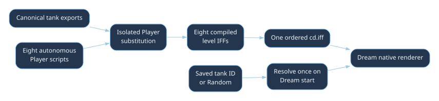
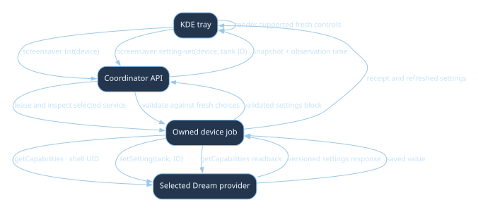

Date: 2026-10-18. Status: implemented; live startup, all eight level renders, and nine one-minute cast1 videos archived.
The Dream runs the World Foundry level renderer with an autonomous Player script for each of the eight aquarium tanks. The selected tank is fixed for one Dream session. Random chooses one of the eight when the Dream starts. The KDE system tray offers the settings actually supported by the selected Dream, including the aquarium tank choice, through coordinator-owned device jobs.
The old video Dream has been replaced by the live host and ordered tank bundle. The launcher and Dream use the same renderer. No World Foundry engine code was changed; any future engine change still requires Will's explicit permission.
99fdfce1cde44b45f6037aa4048dfb348b18929847feb4bf567acf9490317a94..lev files remain the source of truth. scripts/build-aquarium-screensaver-levels.py creates isolated _screensaver variants; each replaces only its Player script and compiles into aquarium-screensaver-cd.iff in a fixed eight-level order.../chromecast-coordinator/scripts/wf_device/tray_qt.py now renders the tank combo from the validated content_settings block. The dedicated screensaver-setting-set workflow saves a selected tank and verifies readback.TankSettingsProvider publishes a versioned getCapabilities response and accepts setSetting.recovery-required after saving complete media; this is recorded in the archive. The footage uses the fullscreen launcher; it does not add a long-duration natural Dream check. Cast1's production APK and Random choice were restored and verified afterward.| Bundle index | Stable tank ID | Tray label | Player source |
|---|---|---|---|
| 0 | aquarium |
Clownfish | wflevels/aquarium/aquarium_screensaver.fth |
| 1 | aquarium_blue_shrimp |
Blue Shrimp | wflevels/aquarium_blue_shrimp/screensaver_player.fth |
| 2 | aquarium_betta |
Betta | wflevels/aquarium_betta/screensaver_player.fth |
| 3 | aquarium_jellyfish |
Jellyfish | wflevels/aquarium_jellyfish/screensaver_player.fth |
| 4 | aquarium_lionfish |
Lionfish | wflevels/aquarium_lionfish/screensaver_player.fth |
| 5 | aquarium_plants |
Planted Urchin | wflevels/aquarium_plants/screensaver_player.fth |
| 6 | aquarium_arowana |
Arowana | wflevels/aquarium_arowana/screensaver_player.fth |
| 7 | aquarium_tiger_barbs |
Tiger Barbs | wflevels/aquarium/tiger_barbs_screensaver.fth |
The build checks that each canonical Player entry and joystick source matches the expected form before replacement. Each script drives the existing steering logic with held and released directional masks or the tank's direct movement mailboxes. It pauses and turns at tank-specific bounds. Its controller should not call the video renderer or depend on prerecorded frames. Build order is the contract between tank ID and native level index; verify this mapping in a test before packaging.

The tray has no hardcoded tank list. The coordinator has a reviewed mapping for the installed World Foundry Dream package to its settings provider, queries that provider under its device lease, and returns a validated content_settings block in screensaver-list and the authenticated device snapshot. The tray renders the setting ID, label, selected value, and options from that block. Other Dream packages show no aquarium control. The app also declares its settings authority in DreamService manifest metadata; this first coordinator implementation uses the reviewed package/authority mapping rather than parsing that metadata from Android's package dump.
Discovery and validation
screensaver-list enumerates installed DreamServices and reads the currently selected component. If it is not installed, the tray shows the error and no content controls.org.worldfoundry.screensaver package and use only the reviewed org.worldfoundry.screensaver.settings authority. This is a package-specific adapter, not unrestricted provider discovery. Its DreamService manifest carries the same authority as documentation for the app contract.content://org.worldfoundry.screensaver.settings method getCapabilities. The provider checks Binder.getCallingUid() for SHELL_UID or its own UID. It returns one ASCII-safe base64-encoded UTF-8 JSON document, settings_b64, so Android's content call text formatting cannot corrupt commas, spaces, or arrays. Limit its encoded size and reject invalid base64/JSON.choice control with ID tank, options from the app, and selected value. Unknown types or versions are shown as “Settings unavailable” with a reason. The coordinator does not guess a default or turn missing data into Random.screensaver-list observation and device snapshot. Each Refresh runs a new owned read job. When another provider is selected, discard the old aquarium settings immediately; do not show them under the new provider.Example capability document after decoding settings_b64 (abbreviated here; all eight tanks appear in the real response):
{
"schema": 1,
"settings": [
{
"id": "tank",
"type": "choice",
"label": "Tank",
"value": "random",
"options": [
{"id": "random", "label": "Random"},
{"id": "aquarium", "label": "Clownfish"},
{"id": "aquarium_betta", "label": "Betta"}
]
}
]
}
Random is a saved preference, while the Dream resolves it to a specific tank once in onDreamingStarted(). The tray displays Random as the preference; a running-state detail can display the resolved tank only if the app exposes a separate read-only session observation. It must not replace the saved preference with the resolved value.

Save workflow: Add a dedicated screensaver-setting-set schema with setting_id and value, not an arbitrary content command. Require a fresh selected Dream, matching package/authority, and membership in the freshly queried options. Call the provider's setSetting; read capabilities again and require the requested value. Record old/new values and the selected component in the job receipt. A setting change affects the next Dream start; it does not silently restart a running Dream. A reservation, maintenance state, stale selection, failed read, or changed provider disables Save.
Other Dreams: A provider without the metadata contract continues to show the existing system settings only. The UI states “This screensaver does not expose content settings.” An unreadable or incompatible contract shows “Content settings unavailable” and a refresh action, without a writable control. This keeps the tray generic while allowing reviewed app-specific controls.
These are layout targets, not screenshots. The browser mockup shows the same states at desktop width.
┌ Screensaver · chromecast-test-02 ─────────────────────────────────────────┐
│ Selected: World Foundry Aquarium Running: Aquarium [observed 19:42] │
│ Provider: [World Foundry Aquarium ▾] [Select] │
│ System settings │
│ ☑ Enable screensaver ☑ Activate on sleep │
│ Idle timeout [ 6 min ▾] [Save system] │
│ Aquarium settings · from installed app · observed 19:42 │
│ Tank [Random ▾] Chooses one tank at each start │
│ [Save tank] │
│ [Refresh status] [Install…] [Trigger…] Job: J‑0692359b671d │
└──────────────────────────────────────────────────────────────────────────┘
┌ Screensaver · chromecast-test-02 ─────────────────────────────────────────┐
│ Selected: Google TV Ambient Running: Unknown · stale │
│ System settings: Enabled · on sleep · 6 min │
│ Content settings: This screensaver does not expose content settings. │
│ [Refresh status] [Select provider] [Trigger… disabled] │
└──────────────────────────────────────────────────────────────────────────┘
The provider combo continues to come from registered DreamServices. Tank options come only from the validated capability response. Keep system Save and app setting Save distinct so one failed operation cannot misreport the other as saved. Show the selected value, observation time, job progress, and a clear next-start note. Accepted coordinator job IDs render with nonbreaking hyphens in prose and GUI labels; executable identifiers remain ASCII.
cd.iff packaging. Check mailbox ranges, stack balance, direction sign, and held/released input in a Forth harness. Verify game levels were not modified.getCapabilities/setSetting contract, manifest metadata, UID check, and size limit. Verify random selection distribution and that saved choices survive process restarts.ScreensaverDialog with a dynamic content section driven by normalized capabilities, plus disabled, stale, unsupported, and save-in-progress states. Add offscreen Qt tests for two providers and option changes; keep HTML/JSON dashboard representations aligned if they show this block.task chromecast:queue, and use coordinator-owned install, inspect, setting and Dream jobs on cast2 when free. Capture screenshots and job evidence for every tank, Random across several Dream starts, and held/released motion. Confirm a DreamService is active in dumpsys dreams; a launcher view alone is insufficient.No World Foundry engine code or shared engine build definitions were edited. The native host uses an app-specific CMake hook and existing engine launch switches. Coordinator deployment was approved explicitly and completed through the reviewed maintenance helper. The final coordinator release preserved its recovery journal and resumed the queue.